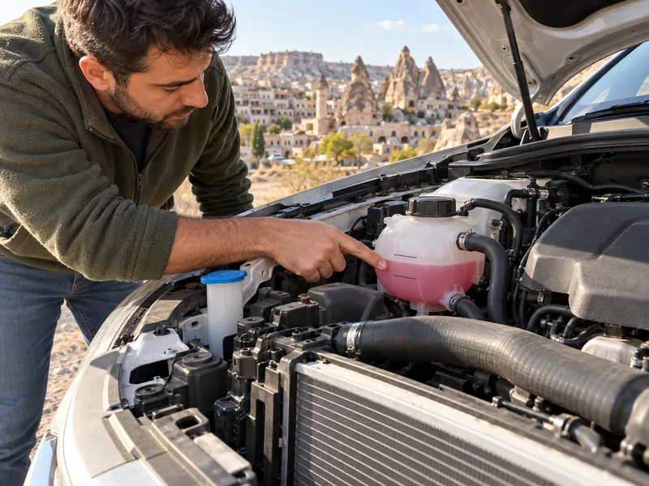

Araç TekniğiKonu 3 / 1039 çıkmış soru
Soğutma sistemi
Motoru tam güç verdiği çalışma sıcaklığında tutan soğutma sistemini; radyatör, termostat, su pompası, fan ve antifrizin görevlerini, motorun hararet yapma nedenlerini ve hararet anında yapılması gerekenleri anlatır.

1Konu anlatımı
Akılda kalsın
- Termostat, soğutma suyunun radyatöre geçişini açıp kapatarak suyu çalışma sıcaklığında sabit tutar; açık kalırsa motor çalışma sıcaklığına çok geç ulaşır.
- Motor soğutma suyu temiz, kireçsiz su ile antifriz karışımıdır; antifriz donmayı ve korozyonu önlediği için her iklim şartında kullanılır.
- Su (devridaim) pompası radyatörde soğuyan suyu motor bloğundaki su kanallarına gönderir.
- Termostat, devridaim pompası veya fan müşirinin arızalanması, suyun eksilmesi ve kayışın kopması motorun hararet yapmasına neden olur.
- Fan çalıştığı hâlde motor soğumuyorsa radyatör petekleri tıkanmıştır.
- Çok sıcak motora soğuk su konursa motor bloğu çatlayabilir; hararette klima kapatılır, kalorifer sıcakta çalıştırılır, kaput açılır.
- Çatlak radyatör hortumu sarılmaz, değiştirilir.
Soğutma sisteminin görevi
Yakıtın yanmasıyla oluşan ısının bir bölümü harekete dönüşür, fazlası ise motoru ısıtır. Soğutma sistemi bu fazla ısıyı uzaklaştırarak motoru öngörülen çalışma sıcaklığı aralığında tutar; böylece piston, silindir ve silindir kapağı gibi parçaların ve motor yağının aşırı ısınıp zarar görmesini önler. Motor ne çok soğuk ne de çok sıcak çalışmalıdır; her iki durumda da verim düşer. Soğutma sistemi motorun tam güç verecek şekilde çalışma sıcaklığında kalmasını sağlar.
Motorlar soğutma şekline göre su soğutmalı ve hava soğutmalı olarak ikiye ayrılır. Otomobillerde genellikle su (sıvı) soğutma kullanılır; bazı motosiklet motorları ise hava ile soğutulur.
Sistemin parçaları
- Motor soğutma suyu: Temiz, kireçsiz su ile antifriz karışımıdır. Motor bloğundaki kanallarda dolaşarak yanmadan doğan ısıyı alır ve radyatöre taşır.
- Su pompası (devridaim pompası): Radyatörde soğuyan suyu motor bloğundaki su kanallarına basar ve suyun sistem içinde dolaşmasını sağlar.
- Radyatör: Motordan ısınarak gelen suyu, peteklerinden geçen hava akımıyla soğutur. Soğutma fanının önünde yer alır.
- Soğutma fanı (vantilatör): Kanatlarıyla radyatör peteklerinden hava geçirir; özellikle düşük hızda ve beklemede soğutmayı sağlar. Elektrikli fanı, suyun sıcaklığını algılayan fan müşiri devreye sokar.
- Termostat: Soğutma suyunun radyatöre geçişini sıcaklığa göre açıp kapatarak suyu belirli bir çalışma sıcaklığında sabit tutar. Motor soğukken suyu radyatöre göndermediği için motorun çabuk ısınmasını da sağlar.
- Hortumlar: Suyu motor, radyatör ve kalorifer peteği arasında taşır. Kalorifer, motor suyunun ısısıyla kabini ısıttığı için kalorifer hortumları da soğutma sisteminin parçasıdır.
- Vantilatör kayışı: Krank milinden aldığı hareketi alternatöre iletir; birçok motorda su pompasını (mekanik fanlı motorlarda fanı da) bu kayış döndürür. Kayış koparsa akü şarj olmaz ve motor kısa sürede hararet yapar.
Soğutma suyunun sıcaklığı göstergedeki hararet göstergesi ve hararet ikaz ışığıyla izlenir. İbre kırmızı bölgeye yaklaşıyor ya da ışık yanıyorsa motor aşırı ısınmıştır.
Antifriz
Su 0 °C'nin altında donar ve donarken genleşir; donan soğutma suyu motor bloğunu ve radyatörü çatlatabilir. Bunu önlemek için soğutma suyuna yeterli miktarda antifriz karıştırılır; antifriz suyun donma noktasını düşürür. Antifriz ayrıca soğutma sıvısının geçtiği yerlerde korozyonu, paslanmayı ve kireç oluşumunu engelleyerek parçaların ömrünü uzatır. Bu nedenle yalnızca kışın değil, her türlü iklim şartında kullanılmalıdır. Soğutma sisteminde asitli su kullanılmaz; metal parçaları aşındırır.
Motor neden hararet yapar?
- Soğutma suyunun eksilmesi: Radyatörün, radyatör hortumlarının veya kalorifer hortumlarının su sızdırması suyu azaltır.
- Termostatın kapalı kalması: Su radyatöre geçemez, soğutulamaz.
- Su pompasının arızalanması veya kayışının kopması: Su dolaşmaz.
- Fan motorunun ya da fan müşirinin arızalanması: Su sıcaklığı yükseldiği hâlde fan devreye girmez.
- Radyatör peteklerinin tıkanması: Kir veya kireçle tıkanan petekler suyu soğutamaz; fan çalışsa bile sıcaklık düşmez.
- Su kanallarında pas ve kireç birikmesi: Suyun dolaşımını ve ısı aktarımını engeller.
- Aracın uygun vites ve devirde kullanılmaması: Motor zorlanır ve fazla ısınır.
Termostatın ters yöndeki arızası da sınavlarda sorulur: termostat açık kalırsa su sürekli radyatörden geçip soğutulur ve motor çalışma sıcaklığına çok geç ulaşır. Hararet göstergesinin kendisinin arızalanması ise suyu azaltmaz, yalnızca yanlış bilgi verir.
Hararet yükseldiğinde yapılacaklar
- Trafik kurallarına uyarak güvenli bir yerde durulur.
- Klima çalışıyorsa kapatılır; klima motora ek yük bindirir.
- Kalorifer sıcak konumda çalıştırılabilir; motor ısısının bir kısmı kabine aktarılarak motorun soğumasına yardım edilir.
- Motor kaputu açılarak motorun soğuması kolaylaştırılır.
- Motor soğumadan radyatör kapağı açılmaz; basınçlı sıcak su haşlanmaya yol açabilir. Su eksikse motor soğuduktan sonra tamamlanır.
2Bu konunun soruları
MEB sınavlarında bu konudan çıkmış 39 soru (3 tanesi en az üç sınavda soruldu). Her soruda doğru cevabı ve açıklamasını hemen görürsünüz.
Hangi sorular?
Sıralama